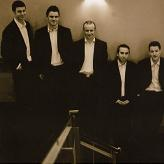

Celtic Lyrics Corner > Artists & Groups > Téada
|  | Téada |
| Members : | John Blake, Paul Finn, Oisín Mac Diarmada, Seán McElwain & Tristan Rosenstock |
| Albums : |
2003 -
Téada
2004 - Give Us A Penny And Let Us Be Gone 2006 - Inné Amárach |